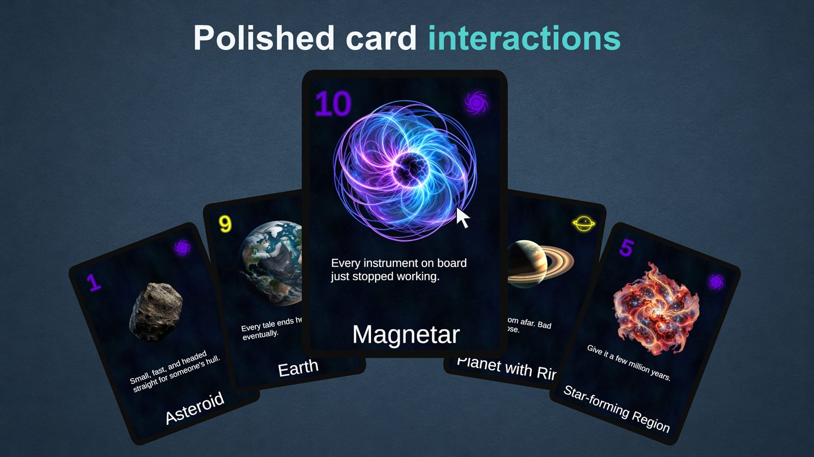
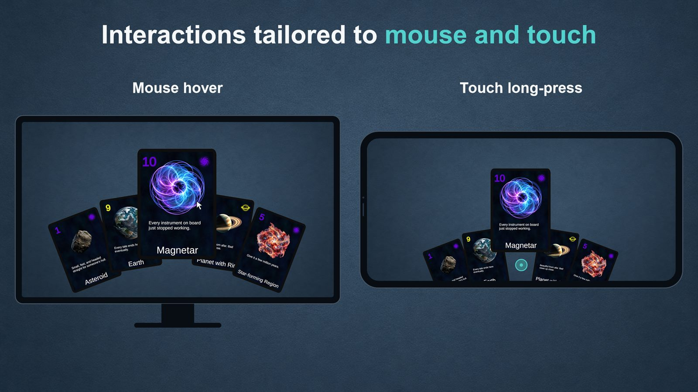
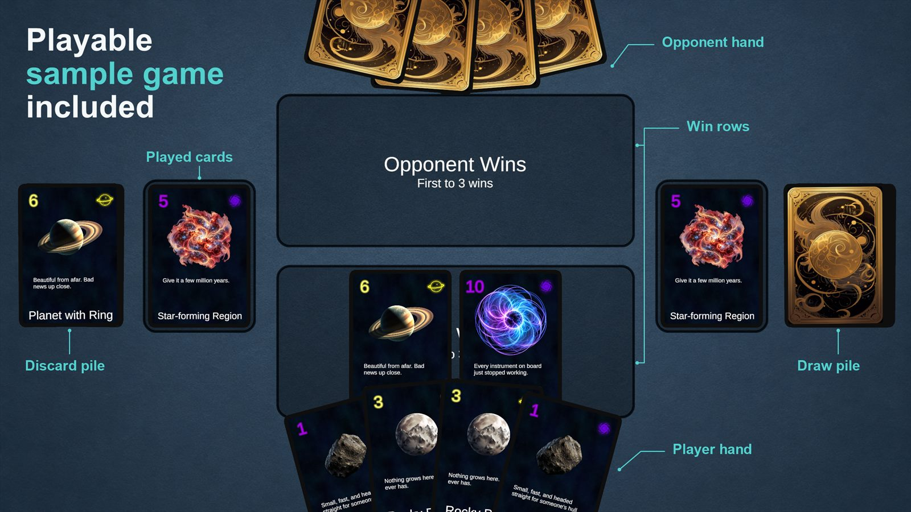

A Unity toolkit for the shared building blocks of card games. Card Hand Toolkit gives your Unity card game polished hand layouts, responsive hover and drag interactions, and flexible card visuals. Start with the included sample and Setup Wizard, then adapt the toolkit to your own game.
The behavior card games share: the hand, hover, drag, playing cards into zones, card data and card visuals.

Polished hand and hover
Cards fan out along a curve you shape in the Inspector. Hovered cards lift, scale and come forward, and cards outside the hand open a larger preview. Players can click or tap to raise the hand and drag cards to reorder them.

Made for mouse and touch
Mouse hover and touch long-press each have their own timings, so the hand feels right on desktop, iOS and Android. It works with the Legacy Input Manager or the Input System.

Drag cards into play
Drag a card above the hand to play it into the first zone that accepts it. Row and single-slot zones are included, with an interface for your own. Global, per-zone and per-card rules decide whether each card can be hovered, dragged, selected or targeted.
The included sample scene is a complete, playable card game built with the toolkit.
Your card data, your presentation
Cards are assets with a title, rules text, art and frame. Add your own game-specific data, such as cost or suit, and choose how it's shown with your own card layouts, frames, art and text.
Guided setup
The Setup Wizard creates your own copies of the toolkit's assets and sets up a playable Game scene. The Quick Start then walks you through drawing cards, showing your own data and playing cards into zones.
The sample card illustrations, card back and game background were generated with AI, and the card illustrations were then substantially edited by hand. See the license for details.
Built for many kinds of card games
Card Hand Toolkit is designed for deckbuilders, traditional card games and other games built around a hand of cards.
It handles how cards look and how players interact with them. Your game's rules, card effects and opponents stay in your own code.
Requirements
Unity
2023.1 or newer, including Unity 6
Render pipelines
Built-in and Universal Render Pipeline (URP)
Platforms
Desktop, iOS and Android
Input
Legacy Input Manager or Input System
Includes
Setup Wizard, sample scene, documentation and C# source
Documentation and support
Start with the Quick Start, then use the API Reference for each part of the toolkit. For questions and issue reports, join the Discord server.
Quick StartInstall, run the Setup Wizard, and get cards drawing, showing data and playing.
API ReferenceConcepts, modules and every public type.